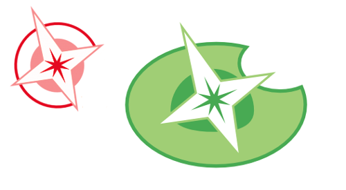
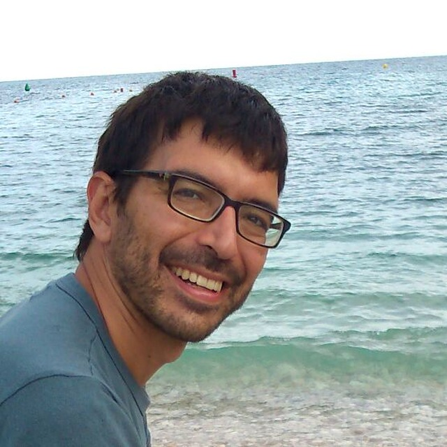

### Teledetección con QGIS #### GeoInquietos Madrid <p>[@ramiroaznar](https://twitter.com/ramiroaznar)<br> CARTO, 4 de diciembre de 2017</p>
### [GeoInquietos](http://geoinquietos.org/) <p>Grupos informales de apasionados por la geografía y las tecnologías OS<br> Dispersos por España y Latinoamérica</p> #### [GeoInquietos Madrid](http://geoinquietos.org/grupos/madrid/) <p> [Lista de correo](https://lists.osgeo.org/mailman/listinfo/madrid)<br> [Meetup](https://www.meetup.com/es-ES/Geoinquietos-MAD/)<br> [Canal de Telegram](https://telegram.me/geoinquietosmad) </p> 
### Últimas actividades <p> <ul> <li>¡Geobirras!</li> <li>**Programación GIS**: webmapping, R, Python...</li> <li>**Cartógrafos**: Mamata Akella, Erik Scoffier, José A. Rodríguez...</li> <li>Mapatones, mapping parties, talleres de QGIS y CARTO BUILDER...</li> </ul> </p>
### Teledetección con QGIS #### Antonio Bolinches <p> <ul> <li>Investigador en la Universidad Complutense,</li> <li>y el Observatorio del Agua de la Fundación Botín.</li> </ul> </p> 